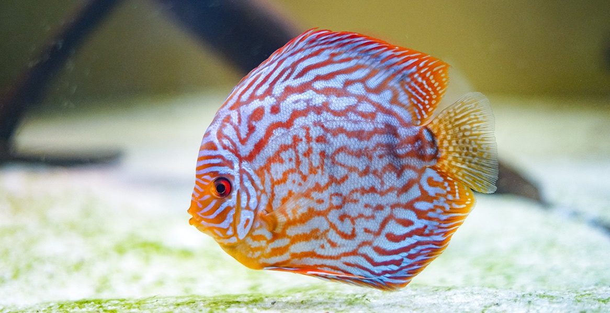

Дискус
Описание
Дискусы широко распространены в бассейне реки Амазонки, а также являются популярными аквариумными рыбами. Для них характерно круглое и сильно сплющенное с боков тело, а также 9 вертикальных полос в рисунке окраса. Дискусы заселяют многочисленные мелкие ручьи и притоки, избегая быстрых и полноводных рек.
Практически все виды аквариумных дискусов были разведены искусственно.
Характеристики